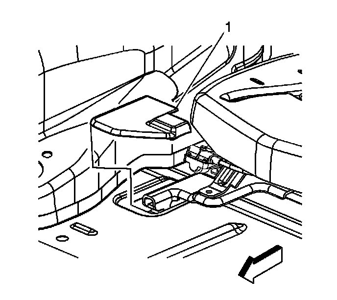
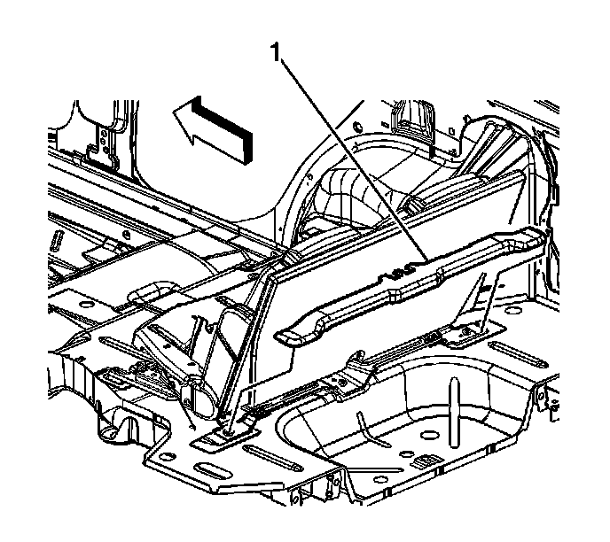
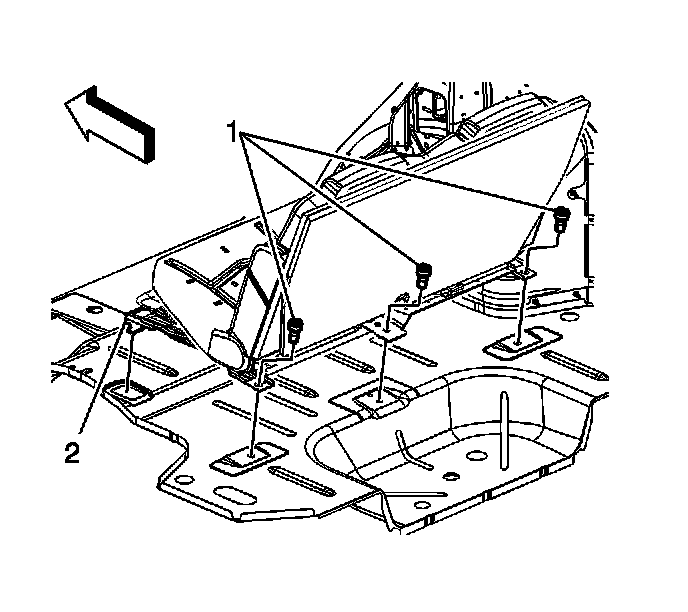
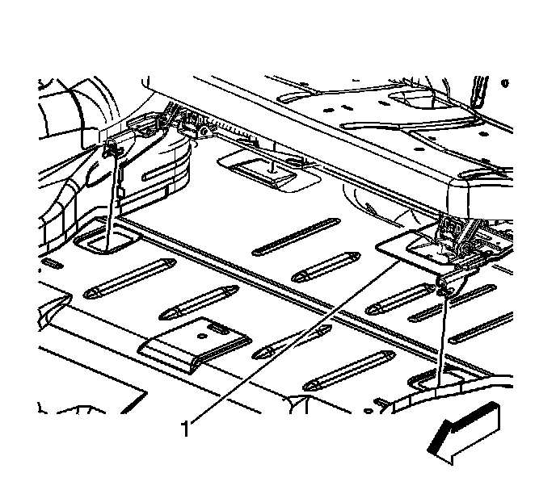

Rear Number 2 Folding Seat Replacement
Rear Number 2 Folding Seat Replacement
Removal Procedure

1. Remove the rear seat track covers (1) from the front of the seat.
2. Raise the seat back to the upright position.

3. Remove the rear seat track cover (1) from the rear of the seat.

4. Remove the rear seat mounting bolts (1) from the rear of the seat.
5. Disconnect the electrical connectors from the seat.
6. Remove the seat from the vehicle.
Installation Procedure

1. Insert the hooks (1) at the front of the seat into the slots in the floor.
2. Connect the electrical connector to the seat.
Notice: Refer to Fastener Notice (Fastener Notice) .
3. Install the rear seat mounting bolts (1).
Tighten the mounting nuts to 45 N.m (33 lb ft).
4. Install the seat track cover (1) to the rear of the seat track.
5. Install the rear seat track covers to the front of the seat (1).
6. Calibrate the seat. Refer to Memory Seat Calibration (Programming and Relearning) .